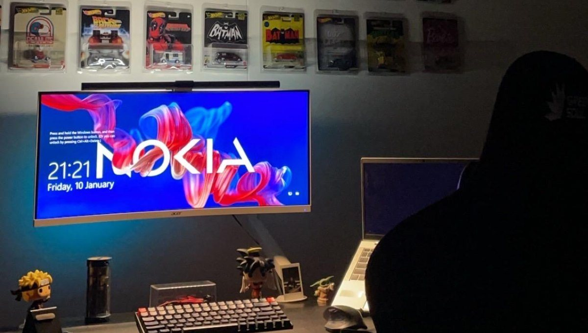
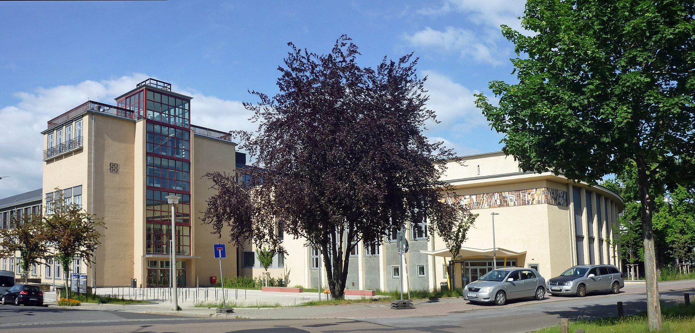
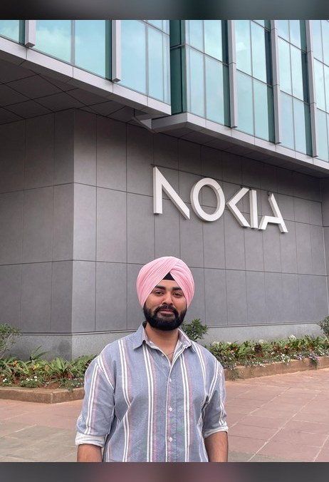

Ex-Nokia 4G/5G R&D · TU Dresden ComNets
I build the software inside mobile networks. And the tooling that proves it works.
Three years in Nokia's Mobile Networks R&D taught me that carrier software is judged at 3 a.m., not in the demo. I worked the data plane — transport-layer C/C++ on embedded Linux, packet processing, QoS — and spent most of my time following faults across software, networking and hardware until the cause was provable rather than plausible. Now I build O-RAN xApps and RAN telemetry at TU Dresden's Deutsche Telekom Chair of Communication Networks.
01 — Approach
What carrier-grade R&D actually teaches you.
Mostly humility. Usually at 3 a.m.
-
The bug is never where the ticket says it is.
Ticket blames the data plane. Data plane blames the hardware. Hardware replies that it works fine on its board. The faults that reached me at Nokia lived in the gaps between subsystems — often a config someone set years ago that everyone since had been too polite to touch. So I follow them through logs, traces and packet captures until something confesses. The first plausible story is not a root cause; it's just the first story.
-
If a system can't explain itself, I don't believe it.
“It’s probably fine” is not a metric. I build the endpoints, dashboards and detection that make a system say out loud what it’s actually doing — currently live RAN metrics on 5G testbeds, where “probably fine” can mean a cell quietly shedding throughput while everyone sleeps soundly.
-
Research is lovely. The release still ships.
I've owned a third-party data-plane integration end to end on a live product line: integration plan, QoS and interface validation, release evidence, and the deployment doc other teams later quoted back at me. Deadlines remain deeply unimpressed by how interesting the problem is.

02 — Now
Making radio networks explain themselves.
Student research assistant at the Deutsche Telekom Chair of Communication Networks, TU Dresden.


- xApp-style services for near-real-time metric collection against FlexRIC and OpenAirInterface 5G testbeds, contributing to O-RAN intelligence research.
- Python microservices on Kubernetes exposing live RAN metrics — PRB utilisation, SINR, throughput — over REST and Prometheus, surfaced in Grafana dashboards.
- Statistical anomaly detection across multi-dimensional KPI streams to flag abnormal gNB and cell behaviour, validated against labelled measurement runs.
03 — Experience
Three years on a live product line.
Nokia Mobile Networks R&D — from transport-layer C/C++ to owning data-plane integration.
-
07/2024 — 09/2025
Software Engineer Nokia Networks
- Owned integration of third-party Marvell data-plane modules into Nokia's OPG/VPP packet-processing platform — QoS behaviour, interface handling, and the validation evidence that went with the customer release.
- Debugged production faults across software, networking and hardware boundaries on a commercial 4G/5G product line, using logs, traces and packet captures to isolate causes that spanned several subsystems.
- Wrote the Kubernetes/5G deployment reference that R&D adopted for system bring-up, and presented findings to engineering and product stakeholders.
-
09/2022 — 06/2024
Associate Software Engineer Nokia Networks
- Maintained and extended C/C++ transport-layer software for 4G/5G base-station platforms across embedded Linux stacks.
- Built the CI validation pipelines in Jenkins and Gerrit that made regressions visible before release rather than after it.
-
03/2022 — 08/2022
Student Trainee Nokia Networks
- Worked on automated testing and debugging of commercial 4G/5G network software while studying full-time — the same working-student model I'm looking for now.
-
06/2021 — 11/2021
Web Developer & BD Kohort
- Built the student-facing platform and its analytics dashboard; led investor outreach and secured seed funding through NSRCEL, IIM Bengaluru.

04 — Selected work
Things I built to prove a point.
Open source, and every one of them started with me being specifically annoyed by something.
RAN observability
OAI RAN Metrics & xApp Lab
Kubernetes-deployed xApp-style microservices that collect live gNB, cell and UE metrics, expose them as Prometheus endpoints, and chart them in Grafana with anomaly detection on top.
View repositoryDistributed systems
Reliability Control Plane
Correlates telemetry across services and evaluates reliability policies as code — answering why a system is degrading instead of adding more alert noise.
View repositoryNetwork security
AI-Assisted Firewall Validation Engine
Simulates packet flow through a rule set to catch shadowed, duplicate and overly permissive firewall rules before they deploy — packaged as a CI quality gate.
View repositoryApplied AI
Ausländer Doc Assistant
Privacy-first, local-first tool that reads German bureaucratic letters, extracts the deadlines and fees, and drafts a polite reply. Built at 11 p.m. the night I realised a letter I couldn't read had a date on it.
View repository05 — Stack
Tools matter. Connecting them is the skill.
Mobile networks
- 4G/LTE · 5G NR
- O-RAN · RIC · xApps
- E2/KPM metrics
- OpenAirInterface · FlexRIC
- PRB · SINR · throughput KPIs
Networking
- TCP/IP · transport layer
- VPP / DPDK packet processing
- QoS & interface config
- Wireshark · tcpdump
Languages
- Python
- C / C++
- Bash
- SQL
Cloud & DevOps
- Kubernetes · Docker · Helm
- Linux, incl. embedded
- Jenkins · Gerrit · GitHub Actions
- Git · GitOps
Quality
- Automated test design
- Regression & feature testing
- Root-cause analysis
- pytest · release evidence
Data & AI
- Prometheus · Grafana
- Pandas · NumPy
- Anomaly detection
- LoRA/qLoRA fine-tuning
06 — About
Bengaluru to Dresden, one system at a time.
I moved to Dresden in 2025 after three years at Nokia, to go deeper on the systems side of networks rather than wider on frameworks. Everything I enjoy turns out to be the same job in different clothes: take something opaque — a fault, a firewall rule set, a letter from the Ausländerbehörde — and make it legible. That last one became an actual project.
Education
M.Sc. Computer Science — TU Dresden, 10/2025 → expected 2027. Distributed Systems, Machine Learning, Large Language Models, Cloud Security, Software Management & QA.
B.E. Information Science & Engineering — BMSIT&M, VTU · First Class with Distinction.
Published
A Review on Privacy and Security in 6G Networks — IEEE International Conference on FABS, 2021.
Kubernetes Container Framework Overview & Deployment — Nokia Networks internal white paper, 2024.
Off the clock
Basketball, die-cast models and stamps. Two of those three are easy to explain at parties; I've stopped defending the stamps. All of them are the same instinct — small objects with design, history and a story packed inside. Currently also in the YETI Dresden G9 entrepreneurship cohort with dresden|exists.
Languages & availability
English C1 (IELTS 8.0) · German A1.2, in active coursework · Hindi and Punjabi native.
Open to working-student roles from November 2026, up to 20 h/week during semester. German residence permit in place.